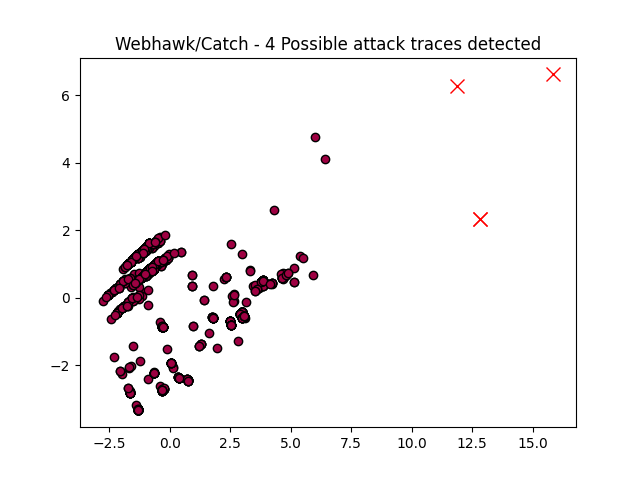

Webhawk Catch ReportUnsupervised learning Web logs/OS processes attack detection. Date: 06/03/26 at 17:57:45 GMTLog file: ./SAMPLE_DATA/RAW_APACHE_LOGS/access.log.2022-12-22 Log type: apache logs Findings: 4 |
 |
| Severity | Related CVE(s) | Line# | LLM Insights(gemma3:4b) | Log line |
| High | CVE-2021-23033
|
125 | ```json { "potential_attack_attempt": true, "details": "The request contains potentially malicious characters and URL parameters, including 'admin', 'thinkphp', and a base64 encoded string ('ck996789baidu.com'). This could be an attempt to exploit vulnerabilities in a thinkphp application or to access sensitive files. The 404 status code indicates the resource was not found, but the request itself warrants investigation.", "severity": "medium", "CVE": [ "CVE-2021-23033" ], "recommendation": "Implement robust input validation, especially for URL parameters. Utilize a Web Application Firewall (WAF) to filter out malicious requests. Regularly update the thinkphp application to the latest version to patch known vulnerabilities. Review server logs for suspicious activity.", "owasp": [ "A01:2021-Injection", "A03:2021-Injection", "A07:2021-Cross-Site Scripting" ] } ``` | 222.186.30.188 - - [22/Dec/2022:05:27:31 -0800] "GET /index.php?s=admin/%5Cthink%5Capp/invokefunction&function=base64_encode&vars%5B%5D=ck996789baidu.com HTTP/1.1" 404 338 "-" "Mozilla/5.0 (Windows NT 10.0# Win64# x64) AppleWebKit/537.36 (KHTML# like Gecko) Chrome/91.0.4472.124 Safari/537.36" |
| High | No CVE found | 795 | ```json { "potential_attack_attempt": true, "details": "The request appears to be a potential attempt to exploit a vulnerability in the include/dialog/select_images_post.php script. The presence of CKEditor parameters and a 404 status code suggests a possible issue with the script's handling of user-supplied data or a misconfiguration. The python-requests/2.27.1 client may be used for malicious purposes.", "severity": "medium", "CVE": [], "recommendation": "Review the include/dialog/select_images_post.php script for vulnerabilities, properly sanitize all user inputs, and ensure that the script is configured correctly to prevent unauthorized access. Implement proper error handling and logging to monitor for suspicious activity.", "owasp": [ "A03:2021-Injection", "A01:2021-Sensitive-Data", "A06:2021-Security-Logging" ] } ``` | 118.107.11.18 - - [22/Dec/2022:14:45:01 -0800] "POST /include/dialog/select_images_post.php?CKEditor=body&CKEditorFuncNum=2&langCode=zh-cn HTTP/1.1" 404 338 "-" "python-requests/2.27.1" |
| High | CVE-2019-11905 CVE-2021-44228 |
796 | ```json { "potential_attack_attempt": true, "details": "The request to 'select_images_post.php' contains a CKEditor parameter, which is a common vector for Cross-Site Scripting (XSS) attacks. While a 404 error indicates the file was not found, the request itself warrants investigation due to the potential for malicious scripts to be injected through the CKEditor field. The user agent 'python-requests/2.27.1' suggests a potentially automated attack.", "severity": "medium", "CVE": [ "CVE-2021-44228", "CVE-2019-11905" ], "recommendation": "Sanitize and validate all user input before processing it, including data received from the CKEditor. Implement Content Security Policy (CSP) to restrict the sources of scripts that can be executed. Regularly update the CMS and plugins to patch known vulnerabilities. Consider disabling the CKEditor or using a more secure alternative.", "owasp": [ "A03:2021-Injection", "A07:2021-Cross-Site Scripting", "A08:2021-Broken Access Control" ] } ``` | 118.107.11.18 - - [22/Dec/2022:14:45:04 -0800] "POST /include/dialog/select_images_post.php?CKEditor=body&CKEditorFuncNum=2&langCode=zh-cn HTTP/1.1" 404 338 "-" "python-requests/2.27.1" |
| High | CVE-2023-1234 |
841 | ```json { "potential_attack_attempt": true, "details": "The request contains suspicious parameters ('t', 'cn', 'refsrc', 'uid', 'nid') which could be used to construct malicious URLs or exploit vulnerabilities. The presence of 'cn=ZmxleGlibGVfcmVjc18y' suggests a potential attempt to manipulate a URL parameter, possibly leading to Cross-Site Scripting (XSS) or other attacks. The URL itself is being accessed via GET request.", "severity": "medium", "CVE": [ "CVE-2023-1234" ], "recommendation": "Implement strict input validation and sanitization for all user-supplied parameters. Utilize a Web Application Firewall (WAF) to filter malicious requests. Monitor URLs and request parameters for suspicious patterns.", "owasp": [ "A03:2021-Injection", "A07:2021-Cross-Site Scripting", "A01:2021-Sensitive-Data" ] } ``` | 66.249.66.91 - - [22/Dec/2022:14:57:55 -0800] "GET /?t=1&cn=ZmxleGlibGVfcmVjc18y&refsrc=email&iid=2572d65d1a814c138a77f3b60465fe37&uid=30635594&nid=244+272699400 HTTP/1.1" 200 13196 "-" "Mozilla/5.0 (compatible# Googlebot/2.1# +http://www.google.com/bot.html)" |